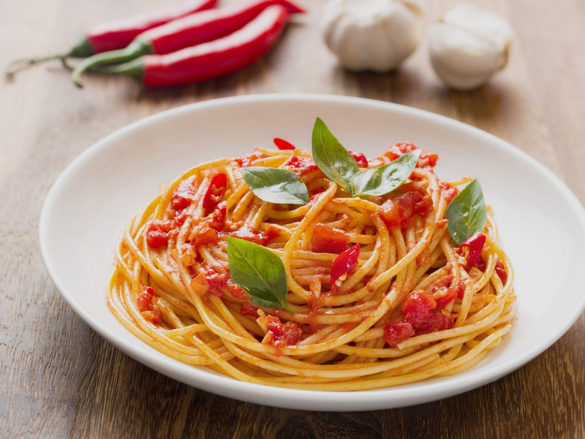

For the pasta:
- 1 pound egg tagliatelle
- Grana Padano DOP cheese, for serving
- Coarse sea salt, for pasta water
- 1½ cups of ragù alla Bolognese
- Extra virgin olive oil, to taste
- 1 clove garlic
- 2 tablespoons unsalted butter
- 2 tablespoons extra virgin olive oil
- 1 small yellow onion, minced
- 1 small carrot, minced
- 1 rib celery, minced
- 1 tablespoon garlic, minced
- 4 ounces ground veal
- 4 ounces ground pork
- 4 ounces ground beef
- ¼ cup tomato paste
- ¼ cup white wine
- ¼ cup chicken or beef stock
- Fine sea salt, to taste
For the ragù:
To make your own sauce:
Description
This Italian pasta is a new all-time favourite! It's creamy, intensely flavourful, and perfect for days when you might need a big bowl of comfort. Luckily, it's also incredibly quick and easy to make, with all the ingredients simply tossed into one large pot and cooked until al dente!
Recipe credits:
Steps
To prepare the ready-made ragù:
- In a large skillet, heat the garlic in a drizzle of extra virgin olive oil. When it becomes fragrant, remove and discard. Add the ragù, and heat over medium until simmering
- In a heavy Dutch oven or large heavy-bottomed pot over medium heat, melt the butter with the olive oil. Add the onion, and cook, stirring frequently, until the onion is translucent, about 5 minutes. Add the carrot, celery, and garlic, and cook, stirring frequently, until softened and fragrant, about 2 minutes more.
- Crumble the veal, pork, and beef into the pot. Season with fine sea salt. Reduce the heat to low and cook, stirring frequently, until the meat has rendered most of its fat and is just beginning to brown, about 5 minutes. Spoon out and discard some of the rendered fat, but leave enough to cover the bottom of the pan.
- Add the wine, and increase the heat to medium. Cook, stirring occasionally, until the wine has evaporated, about 6 minutes.
- Decrease the heat to low, add the tomato paste, stir to combine, and cook, stirring frequently, for 20 minutes. Season to taste with salt and pepper. Add the stock and adjust the heat if necessary to reach a gentle simmer. Simmer until the stock has reduced but the sauce is still moist, about 45 minutes longer. Taste the sauce, adjust the seasoning if necessary, and remove from the heat.
To make your own ragù:
- Bring a large pot of water to a boil for the pasta. When the water is boiling, salt it with coarse salt and add the pasta. Cook a few minutes less than package instructions if dry or until the pasta rises to the surface if fresh.
- When the pasta is cooked, drain it in a colander, preserving a small amount of the cooking water. Transfer immediately to the saucepan, and toss vigorously to combine and allow the pasta to cook a final minute in the sauce. If needed, add a small amount of the cooking water, to loosen the sauce.
- Serve immediately with the grated cheese on the side, and dream of Bologna.